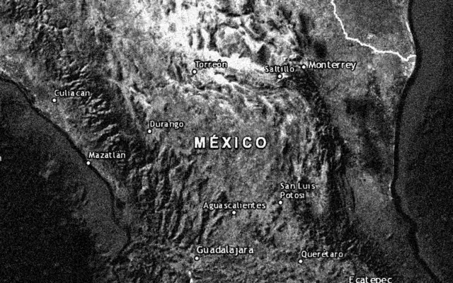
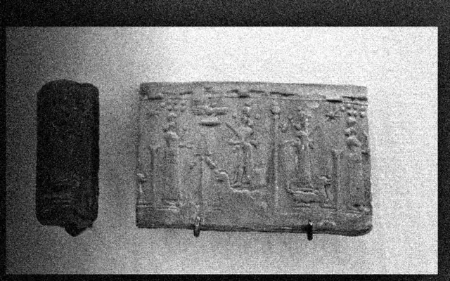
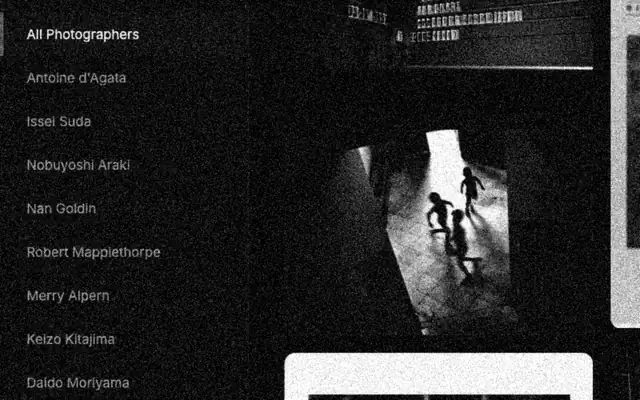
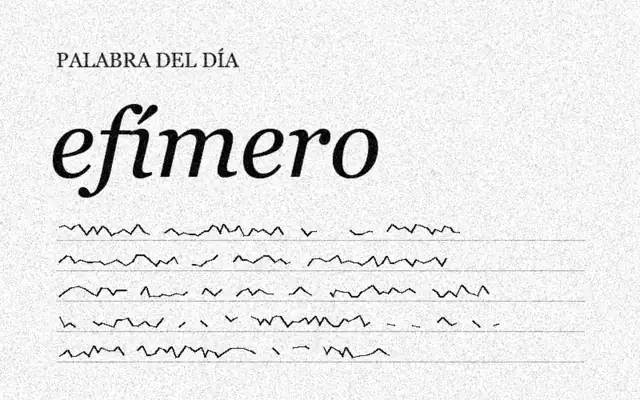
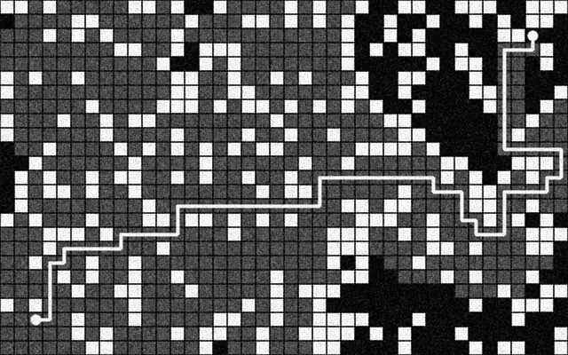
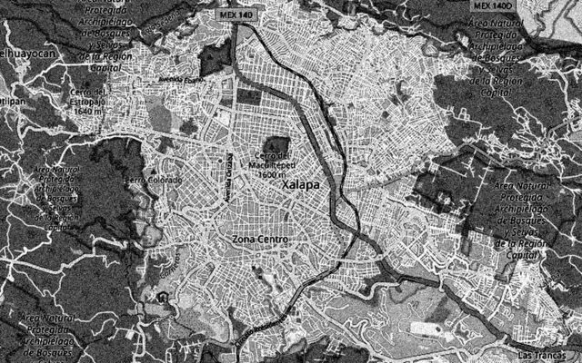
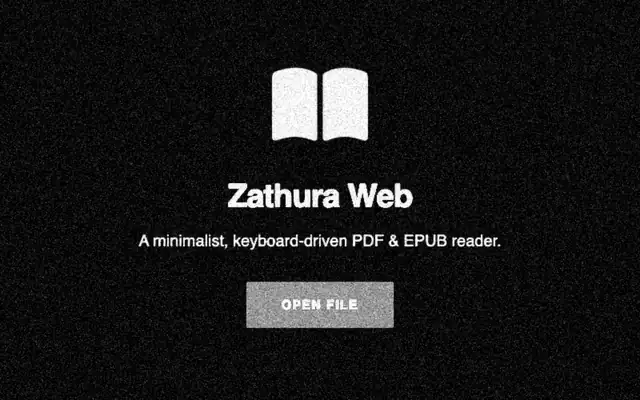

01_ATLAS-RELIEVE-MX
Relieve, pendientes, naturaleza y clima de México con datos satelitales abiertos.

02_BIBLIOTECA-VISUAL
Pintura, escultura y arqueología del Génesis, Gilgamesh, la Ilíada y el Enuma Elish, en la mayor resolución que existe.

03_PHOTODASHBOARD
Archivo visual de fotógrafos: Moriyama, Araki, Goldin, Kitajima y más.

04_ESCRIBA
Aplicación minimalista para mejorar tu escritura diaria con la 'Palabra del Día'.

05_VIS-SEARCH
Visual search experience and utilities.

06_CITY-TRANSIT
City transit visualization tool.

07_WEB-PDF
A high-performance PDF manipulation tool built for the modern web.